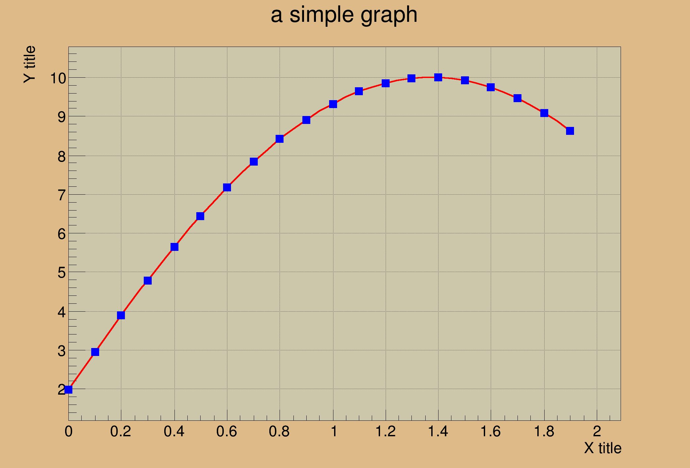

A Simple Graph Example
A Simple Graph Example

i 0 0.000000 1.986693
i 1 0.100000 2.955202
i 2 0.200000 3.894183
i 3 0.300000 4.794255
i 4 0.400000 5.646425
i 5 0.500000 6.442177
i 6 0.600000 7.173561
i 7 0.700000 7.833269
i 8 0.800000 8.414710
i 9 0.900000 8.912074
i 10 1.000000 9.320391
i 11 1.100000 9.635582
i 12 1.200000 9.854497
i 13 1.300000 9.974950
i 14 1.400000 9.995736
i 15 1.500000 9.916648
i 16 1.600000 9.738476
i 17 1.700000 9.463001
i 18 1.800000 9.092974
i 19 1.900000 8.632094
from __future__ import print_function
from ROOT import TCanvas, TGraph
from ROOT import gROOT
from math import sin
from array import array
c1 =
TCanvas(
'c1',
'A Simple Graph Example', 200, 10, 700, 500 )
c1.SetFillColor( 42 )
c1.SetGrid()
n = 20
x, y = array( 'd' ), array( 'd' )
for i in range( n ):
x.append( 0.1*i )
y.append( 10*
sin( x[i]+0.2 ) )
print(' i %i %f %f ' % (i,x[i],y[i]))
gr.SetLineColor( 2 )
gr.SetLineWidth( 4 )
gr.SetMarkerColor( 4 )
gr.SetMarkerStyle( 21 )
gr.SetTitle( 'a simple graph' )
gr.GetXaxis().SetTitle( 'X title' )
gr.GetYaxis().SetTitle( 'Y title' )
gr.Draw( 'ACP' )
c1.Update()
c1.Modified()
c1.Update()
- Author
- Wim Lavrijsen
Definition in file graph.py.

 ROOT 6.18/03 - Reference Guide Generated on Thu Aug 29 2019 04:10:22 (GVA Time) using Doxygen 1.8.14.
ROOT 6.18/03 - Reference Guide Generated on Thu Aug 29 2019 04:10:22 (GVA Time) using Doxygen 1.8.14.